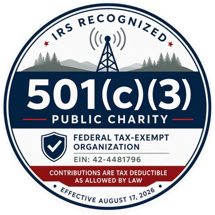

About WRA
About the Wisconsin Repeater Alliance
A nonprofit dedicated to fair, transparent and technically sound repeater coordination for Wisconsin's amateur radio community.
01Who we are
The coordination body for Wisconsin's repeaters
WRA is responsible for promoting efficient and interference-free operation of amateur radio repeater systems across Wisconsin.
Our purpose is to provide fair, consistent and technically sound frequency coordination while supporting repeater owners, amateur radio clubs, emergency communication organizations and individual operators.
For many years, volunteer coordinators have worked to keep Wisconsin's repeater spectrum organized and accessible. WRA continues that tradition as a modern nonprofit, embracing up-to-date tools and engineering practices that improve coordination, record keeping and spectrum management. Through cooperation and technical expertise, we help maintain a robust repeater infrastructure that supports everyday communications, public service events, emergency communications and amateur radio experimentation throughout the state.
02Mission
Our mission
The Wisconsin Repeater Alliance exists to promote the efficient and responsible use of amateur radio repeater spectrum throughout Wisconsin through engineering-based frequency coordination, technical guidance and collaboration with the amateur radio community. We are committed to minimizing interference, preserving spectrum resources, supporting repeater growth and ensuring reliable communications for current and future generations of amateur radio operators.
03Vision
Our vision
To be Wisconsin's trusted resource for amateur radio repeater coordination by providing fair, transparent and technically sound spectrum management, while fostering cooperation among repeater owners, clubs and amateur operators across the state.
04What we do
Our responsibilities
Our goal is to ensure amateur radio spectrum is used efficiently while providing the greatest possible benefit to the amateur radio community.
- Coordination of new repeater systems
- Review of repeater modifications
- Frequency assignment recommendations
- Interference prevention and resolution
- Technical review and engineering analysis
- Maintenance of coordination records
- Spectrum planning and management
- Support for repeater owners and operators
05Governance
How WRA is governed
WRA is a Wisconsin nonprofit corporation operating as a federally recognized 501(c)(3) charitable organization. It is governed by a nine-member Board of Directors elected in accordance with its bylaws.
Coordination decisions are made under established policies and Board oversight — not by any single individual — which builds accountability and transparency into everything WRA does. The bylaws are published so the community can see exactly how the organization is run.

- Legal name
- Wisconsin Repeater Alliance, Inc.
- Incorporation
- Wisconsin nonprofit corporation
- Federal status
- 501(c)(3) public charityClassified under section 509(a)(2) of the Internal Revenue Code. Effective August 17, 2026.
- EIN
- 42-4481796
- Contributions
- Tax deductible to the extent permitted by lawWRA is eligible to receive tax-deductible gifts, bequests and charitable contributions.
- Board
- Nine members, elected under the bylaws
- Governing documents
- Bylaws, policies, procedures, financial controls, conflict-of-interest standards and record retention requirementsBylaws and policies
06Leadership
Board of Directors
WRA's initial leadership team consists entirely of volunteers.
The Board of Directors has nine members elected in accordance with the organization's bylaws. Members in good standing may have opportunities to serve on committees, take part in leadership programs and run for Board positions as vacancies occur.
Officers named at formation
- PresidentCorey BeckerKD9HCW
- Vice PresidentKevinN9OIG
- TreasurerIndependent accountant, startup phase
- Historical advisorChris KeezerKC9NVV
07Principles
Our guiding principles
- 01
Engineering first
Coordination decisions are based on accurate technical information and sound engineering practice.
- 02
Fairness
Every applicant receives consistent and objective consideration.
- 03
Transparency
Our coordination processes are clear and understandable.
- 04
Collaboration
The amateur radio community is strongest when repeater owners, clubs and operators work together.
- 05
Stewardship
Spectrum resources are preserved and managed responsibly for future generations.
08History
From WAR to WRA
For many years the Wisconsin Association of Repeaters (WAR) served as Wisconsin's repeater coordination body. WRA was formed to carry that work forward under a stronger, more sustainable structure.
-
Transition announced
WAR began winding up its affairs and transferring coordination responsibilities, approved digital assets, coordination records, historical archives and institutional knowledge to Wisconsin Repeater Alliance, Inc.
-
Open letter to the community
WRA's President explained why the new organization was formed, confirmed that records and coordination history have been preserved, and set out the governance being built.
-
ARCS is working
The cloud-based coordination platform moved from idea to working system, with multi-state data migration completed.
-
501(c)(3) public charity status
The IRS recognized WRA as a 501(c)(3) tax-exempt public charity, effective August 17, 2026.
-
Target for full operations
The target date stated in the September 11 open letter.
09Public service
Reliable communications when they are needed most
Wisconsin's repeater infrastructure plays an important role in emergency communications, weather spotting, public service events and disaster response.
- ARESAmateur Radio Emergency Service
- RACESRadio Amateur Civil Emergency Service
- SKYWARNNational Weather Service storm spotter network
Be part of Wisconsin's repeater future
Membership and volunteers keep WRA independent, accountable and effective.